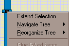
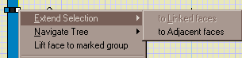
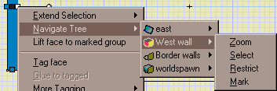

Mad Selector
Updated 20 Feb 2001
- QuArK Information Base
- 2. Map editing
- 2.5. Plug-in descriptions
|
|
Mad Selector
Updated 20 Feb 2001
|
Upper levels: - QuArK Information Base - 2. Map editing - 2.5. Plug-in descriptions |
|
2.5.2. Mad Selector |
[ - - ] |
 The Mad Selector plugin is oriented towards making it easier to select the stuff you want, tho it has tended to spread into the related area of organizing the group structure. It puts three main items onto the face, poly, group and entity menus (not all available for all menus). |
|
Index |
|
Extend Selection |
tiglari - 20 Feb 2001 | [ Top ] |
|
 This appears as a submenu for faces, and an item for polys and groups. The face submenu has subitems `To Adjacent Faces' and `To Linked Faces'. The first extends the current selection to faces that are exactly coplanar to the selected face, and share an edge with it, and likewise to further faces adjecent to these in the same way. So that if the floor of a room is selected, and there is a say a pillar whose bottom is flush with the top of the floor, the bottom face of the pillar will join the multi-selection with the floor. -- if it works, which it doesn't always, for reasons I haven't figured out. Extend Selection to Linked Faces on the other hand just extends the selection to other faces that are linked with the currently selected one, as described in the description of the plugin. For groups and polys, there is currently only extend selection from the currently selected poly to faces that are adjacent to faces in that group or poly, so that if you drag the poly, these faces will be dragged along with it (I think it's better to drag faces instead of whole polys, but when I took this off the menu someone wanted it back, so here it is again). |
|
Containing Groups |
tiglari - 20 Feb 2001 | [ Top ] |
|
 This is for manipulating group structure, and other stuff. When you click it, for a face, poly, group or entity (brush or point), you get a submenu consisting of the groups etc. that contain what you've clicked, on starting with the item itself at the top and going down to worldspawn. Then when the mouse is over one of these, the chosen object, we'll say, you get a further submenu with four options:
One wart is that things aren't drawn right in the 3d window when selection is restricted; I've got some delphi code that draws only the stuff in the restriction correctly, but something else is wrong with the source I have so that certain models and textures aren't rendered correctly. Hopefully this will all be sorted out in Q5.11. |
|
Reorganize Tree |
tiglari - 20 Feb 2001 | [ Top ] |
|
These are the items that actually reorganize the tree-structure. This appears as a submenu for entities, groups and polys, but as a single item, `Lift to Marked Group', for faces. This item will cause the selected face to become a member whatever group has been marked, so giving two-click face-sharing. For the others, the Move in Tree menu contains three items:
Into and over refer to positions in the tree-view, and when the commands are enabled, `marked' is selected be the name of whatever is actually marked. |
|
Copyright (c) 2009, GNU General Public License by The QuArK (Quake Army Knife) Community - http://quark.sourceforge.net/ |
[ - Top - ] |